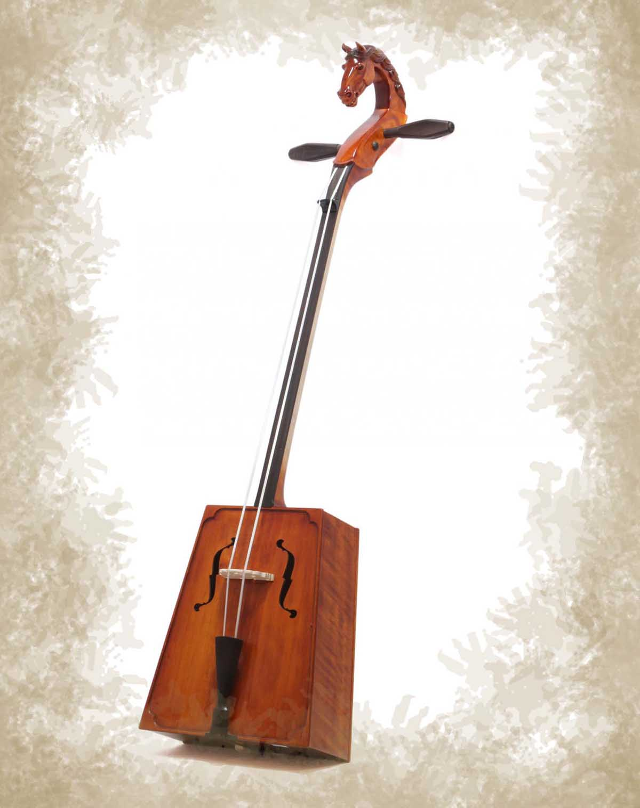

Mungunzaya Enkhtuya
About me
My name is Mungunzaya, which means "a fortune filled with money". I was born and raised in Mongolia where my name came from. I love creativity and logic, so that's why I chose to learn about programming. It has been a fun journey so far learning these new programming languages.
Morin Khuur
The morin khuur, or horsehead fiddle, is a traditional Mongolian bowed string instrument and one of the most important symbols of Mongolian culture. I began learning to play the morin khuur ten years ago and have loved it ever since. My exposure to this unique instrument sparked a deeper interest in musical traditions and helped me form a lasting connection with music.
